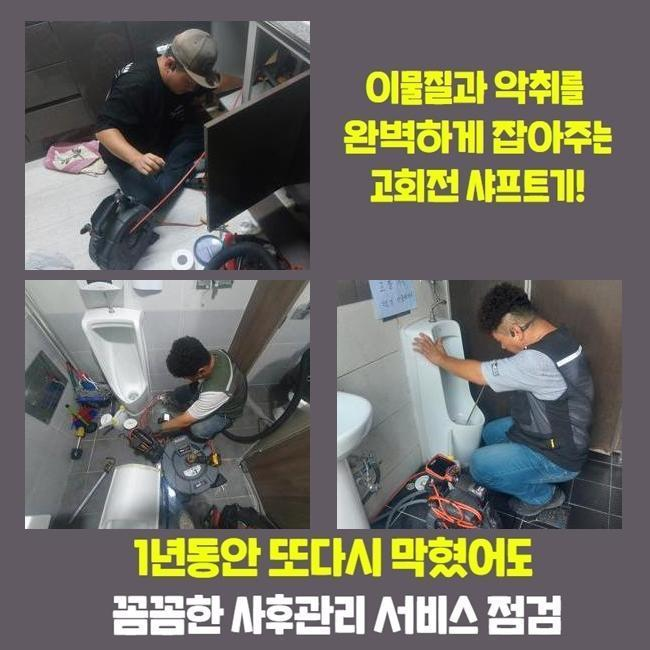
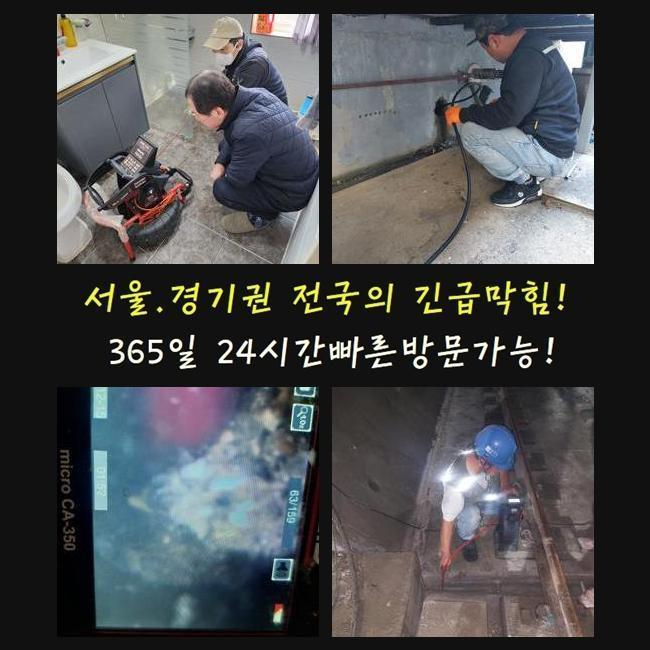
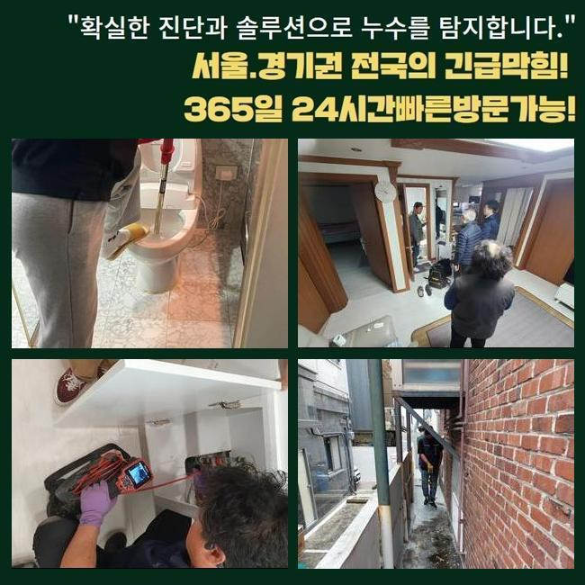
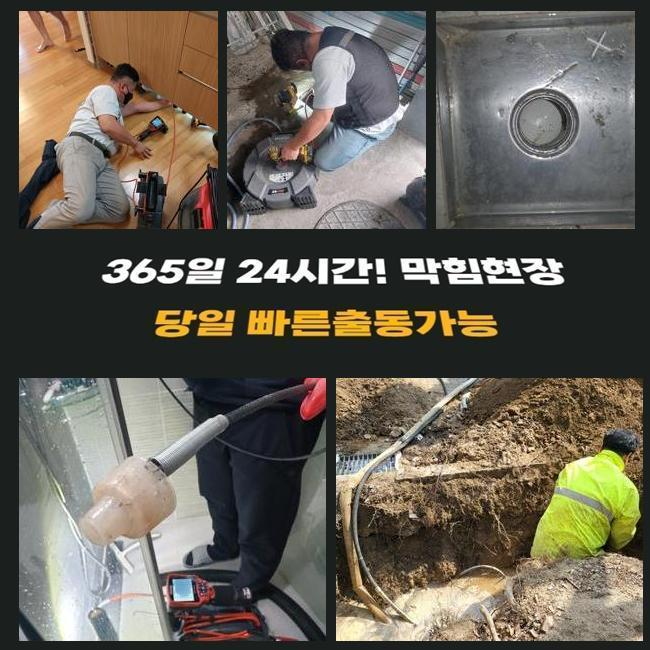
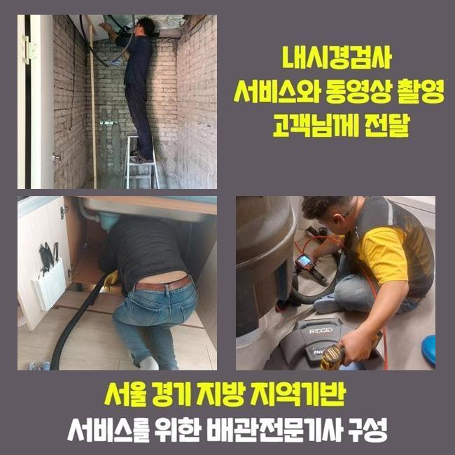
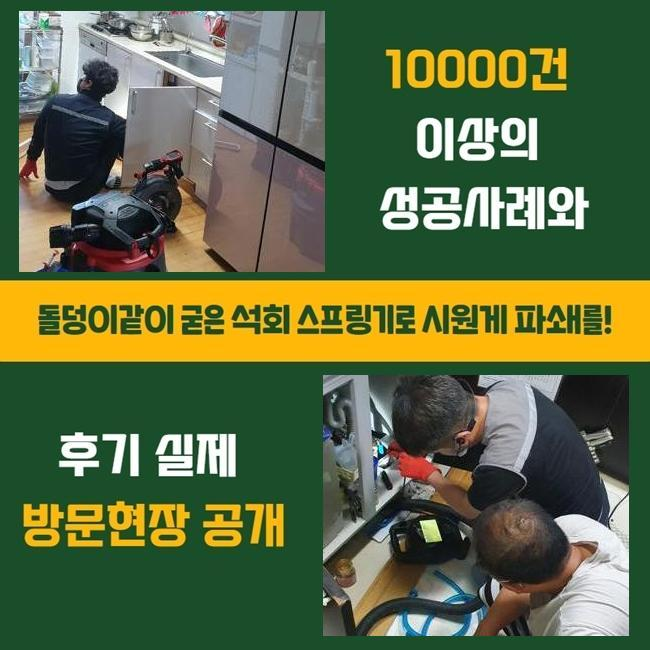
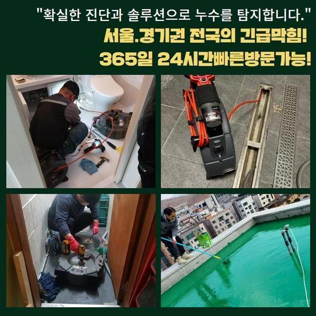

🏠 고양시 내유동세탁실막힘 신평동 하수구뚫어주는곳 해결방법
고양 하수구막힘 전문 시공 후기

📋 작업 개요
- 위치: 고양
- 서비스 유형: 하수구막힘, 배관막힘, 누수수리, 역류해결, 뚫는업체, 배관청소, 설비공사, 악취차단
- 작업 일시: 2025. 2. 18. 10:10
- 업체명: 하수구수사대 (010-5615-2118)
🔍 문제 상황
고양시 내유동세탁실막힘 신평동 하수구뚫어주는곳 해결방법
하수구 중단이 생기는 문제점들은 다수지만 끈적끈적한 슬러지들과 석회가 흔한 방해물이라고 선정할 수 있어요
내부리모델링을 하고 막힘과 역류같은 일들이 발견되면 유입된 건축자재나 석조 등을 원인으로 가늠을 해보는 게 유력할 수 있습니다
오늘의 작업장에서도 시공을 하면서 여러가지 막힘 원인들을 내부에서 목격하게 되었습니다
일반 주택에서 하수 고장이 생기고 오래 방치되면 아랫집로의 물샘 사고가 연결될 수 있다보니 신속하게 통수를 막는 대상을 없애야합니다
엎친데 덮친격으로 상가건물일 때는 매출에 직결되는 커다란 골칫거리이므로 조금도 지체하지 않는 처리를 해드려야 합니다
이번 현장의 경우에는 앞서 작업을 완료한 인테리어시공이 있은 후부터 하수구의 불통으로 영업을 못하셨다고 합니다
보통 인테리어시공이 있은 후부터 작업에 들어간 잔해들을 따로 쓸어서 없애지 않고 배관 속으로 내려보내면 치명적인 막힘을 만듭니다
갖가지의 문제들로인해 오류가 발생하니 확신을 가지지 않고 필요한 장비들을 빠짐없이 챙겨서 고객님이 계신 건물로 갔습니다
작업지에 도착해서 상황의 이모저모를 봤더니 바닥에 설치된 하수구 구멍에서 막힘이 도래한 것이었습니다
흡입을 하는 석션으로 근처의 정돈부터 들어간 다음에 배관라인 안에 있는 하수 끌어당겨주기로 했습니다
물뿐만이 아니라서 석션장치의 힘만으로는 불충분한 상황이었지만 안의 상황을 보기 위해서는 내부에 찬 혼탁한 물을 삭제하는 게 먼저였습니다

🔎 원인 분석
💡 전문가 진단: 정밀 진단 장비를 사용하여 슬러지의 고착 여부를 판명하고 타격/세척 작업을 실시했습니다.
막힌 하수구를 극복하기 위해서는 수작업뿐 아니라 장비의 힘이 기본적으로 필요합니다
아까도 사용했던 석션과 플렉스샤프트는 꼭 필요하고 어두컴컴한 관로를 뚜렷하게 보기 위해서는 배관 내시경도 돌려보아야 합니다
배관 통로가 크거나 하부에 자리하고 있다면 물을 강하게 발사하는 고압 청소기를 추가할 수 있어서 항상 탑재하고서 현장으로 향합니다
요즘은 전문적인 뚫는 장치들이 다분화되어서 하수를 정상화하는 단계가 간단하게 끝날 때가 많습니다
작업의 담당자가 만일 지식을 경미하게 보유했다면 장비가 뛰어나다고 해도 활용하기 까다로울 겁니다
현황을 완전히 분석하지 않고 장치를 막 넣어버리면 하수배관의 데미지까지 벌어질 수 있으니 하수구를 보는 카메라로 수로 내부를 탐색한 다음 뚫어내는 기기를 통한 작업을 실시하는 게 좋습니다
내부에 찰랑대던 물을 제거하고 배관 내시경을 켜서 배관 속으로 쑥쑥 밀어넣어서 탐방을 시작해 보았습니다
이리저리 자리를 옮겨가며 확인해보니 관로에 토사물이나 비닐조각같은 물질들이 빈틈없이 자리하여 물 배출이 힘들다는 사실을 보고 이해하게 되었습니다
인테리어업자를 부르시거나 절차를 거쳤다면 배수구로 오물이 들어가지 않게끔 자주 쓸어주면서 정돈작업을 해주는 게 필요합니다
심층부에 이르러서 규모가 큰 뭉치가 발견됐는데 인테리어 공사 중의 백시멘트 가루가 안으로 떨어졌고 덩어리화가 된 것을 추측해 볼 수 있었습니다
과정 중에 발생한 잔해가 들어간 듯 보였습니다
약간의 틈만 보이는 상태라서 막힘이 심해보였습니다

🔧 작업 과정
내시경으로 안쪽을 계속 주시하며 분쇄 업무를 진행하여 안전도를 높였습니다
샤프트기기를 활용하여 슬러지를 작은 조각으로 나눠서 꺼내보려고 시도했습니다
분해가 완료된 대상을 석션기로 흡입을 해보았는데 거대한 덩어리들도 나왔습니다
쉼 없이 해체와 석션 작업을 해주었지만 시멘트가 단단하게 벽체에 붙어서 하수구 공사까지도 들어갈 수 있는 까다로운 상황임을 감지할 수 있었네요
샤프트만으로는 깔끔한 청소가 완성되지 못할테니 배관에 진동을 가하는 단계를 고수하면 배관이 아예 부러져버릴까 걱정됐습니다
굴착을 진행한 다음에 육안으로 관로를 보고서 맞춤으로 작업해야 할 것 같았습니다
반드시 철거가 필요한 상황을 전해드리고 굴착을 시작했어요
카메라로 보았 듯 시멘트 덩어리가 축적되다가 결국 배관이 차단된 게 맞더라고요
인테리어 업무를 하면서 흘러가버린 분진이 덩어리화가 된 것입니다
시멘트라는 재료는 양생이 빠른 편이라서 관로가 차단이 되는 문제점들이 여러 곳을 담당하다보면 단골로 등장하는 막힘 원인입니다
문제되는 쪽을 정상적인 새 배관으로 연결지어줬어요
배관을 자르는 순간에도 허술하지 않고 깔끔하게 잘라주는 게 필요하며 교환작업을 거친 쪽에도 틈이 형성되지 않게 촘촘히 연결합니다
연결부를 이격이 일절 없도록 마감 짓지 못할 경우라면 조금씩 떨어지기 시작하거나 갈라짐이 생겨서 누수상황으로 업그레이드 될 때가 있어요
이어준 배관이 움직이거나 이탈되지 않게끔 신중하게 이음새를 메꿔드렸습니다
내부에서 끌어올린 이물질들이 엄청난 양이 나왔습니다
이정도로 많은 침전물이 좁다란 관로에 놓여있었으니 통수불능은 당연한 처사였어요
하수가 정상적으로 이동하는지 대량의 물을 받아서 한 번에 폐수시켜보는 과정을 통해서 배수테스트에 돌입했습니다
더러운 물의 역류같은 고질적인 문제들이 싹 사라진 사실을 알아차리고는 미장 시멘트를 깔아주었습니다
시멘트 회반죽을 충분하게 밀어넣어 배관 자리를 잡고 미관상으로도 보기 좋게 평탄화를 거쳐줍니다


✅ 작업 완료
누수를 막기 위한 방수막을 만들고서 기존과 비슷한 타일을 틀림없이 부착합니다
하수구 공사를 마친 이후에 작업장소였던 바닥에 방수기능은 넣어주지 못하면 아래에 위치한 이웃까지 누수사고가 일어나는 격이니 꼼꼼하게 시공 마무리를 체크해드리고 있습니다
시멘트가 말라야하니 몇 시간 정도는 이용을 자제할 것을 당부드린 후에 막힘 역류가 동시에 생겼던 하수구 개선을 성공할 수 있었어요!
하수구 막힐 때의 증상은 다양한데 이번처럼 욕실 배수구 쪽의 문제도 흔하게 일어나서 문의를 여러차례 받아왔습니다
상시 대기 중이므로 전화만 주신다면 막혀서 속답답한 하수구 문제를 새것처럼 만들어드리겠습니다




⚠️ 베란다 누수 및 방수 관리 방법
- ✅ 비가 많이 올 때 창틀 주변이나 아래층 천장에 얼룩이 생기는지 정기적으로 확인해 보세요.
- ✅ 우수관 주변 실리콘 마감이 들뜨거나 깨진 틈새가 있는지 손상 여부를 수시로 체크하세요.
- ✅ 베란다 바닥 타일의 줄눈(메지)이 소실되면 그 틈으로 물이 침투하여 누수가 유발됩니다.
- ✅ 누수 의심 증상 발견 시 방치하면 아래층 손실이 커지므로 즉시 전문가의 진단을 받으십시오.
💡 핵심 정리
- 확실한 장비 작업(내시경 점검 및 샤프트 스케일링)으로 원인을 뿌리 뽑습니다.
- 작업 후 1년 이내에 동일한 부위 재발 시 100% 무상 A/S 서비스를 보장합니다.
- 서울 · 경기 · 인천 전 지역에 24시간 언제든 긴급 출동할 수 있도록 항시 대기 중입니다.
❓ 자주 묻는 질문 (FAQ)
🚨 고양 하수구막힘 문제로 고민이신가요?
정확한 원인 진단과 확실한 시공으로 재발 없는 해결을 약속드립니다.
24시간 긴급 출동 | 서울 · 경기 · 인천 전지역 | 1년 내 재발 시 무상 A/S